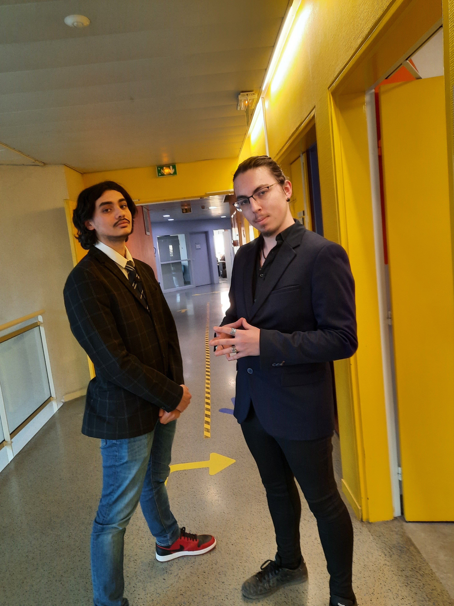

About me
I am a 20 year old student from Germany. I am currently studying computer science at the University of Applied Sciences in Kaiserslautern. I am interested in web development and game development. I am currently working on a 2D game with the Unity engine.
Learn more >